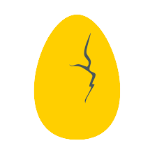
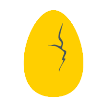

Sobre mí
¡Bienvenido a la página “Sobre mí”!
Hola! Mi nombre es Martín Amato, soy programador web full-stack, tengo 20 años y llevo desde 2021 reuniendo conocimientos sobre programación.
El primer lenguaje que estudié fue Javascript, el cual utilice solamente para hacer codigos basicos, de entrada y salida de datos para darle dinamismo a cuentas que tenia que hacer en el día a día, para mi casa o la universidad.
A partir de ahí me di cuenta lo mucho que me interesaba este mundo, y empece a adentrarme ya que mis conocimientos eran nulos. En esa aventura conocí HTML y CSS, las dos grandes columnas de la programación web. Aprendi muchisimo por mi cuenta, y otro poco de distintas becas que fui consiguiendo a lo largo de este trayecto.
Todos los cursos realizados lograron generar en mi no solo mejores resultados en lo que es la programacion en si, sino que tambien fomentaban mucho el trabajo en equipo, lo cual es vital para desempeñarse en este rubro.
A partir de ahi estudié muchas tecnlogias que optimizaron mis tiempos y codigos, como por ejemplo Bootstrap o Ionic
Como dije anteriormente, los cursos me formaron mucho ¿Cuantos hice? Hasta el momento llevo Seis cursos de becas que fui consiguiendo a lo largo de este trayecto
Dos de esos cursos fueron dictados por la empresa Egg Cooperation y este proyecto es parte de uno de ellos ¡Gracias Egg por la oportunidad!
 
